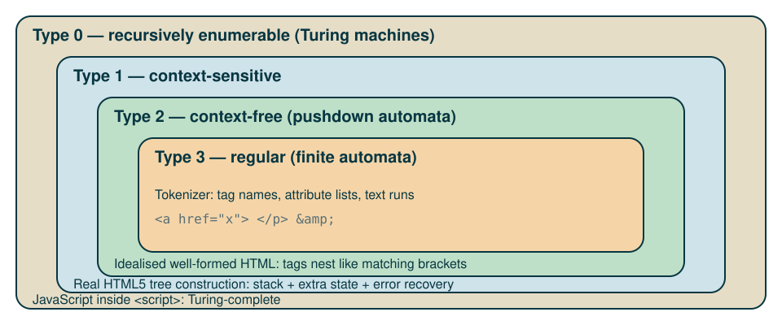

flowchart TD
html["HTML"] --> head["HEAD"]
html --> body["BODY"]
head --> title["TITLE"]
title --> t1(["My Document"])
body --> h1["H1"]
body --> p["P"]
h1 --> t2(["Header"])
p --> t3(["Paragraph"])
classDef element fill:#268bd2,stroke:#073642,color:#fdf6e3,stroke-width:2px;
classDef text fill:#eee8d5,stroke:#073642,color:#073642,stroke-width:2px;
class html,head,body,title,h1,p element;
class t1,t2,t3 text;
HTML pages and their DOM
From markup to tree: what the browser actually reads
ale66
Introduction
Learning objectives
describe HTML as a language: alphabet, tokens, grammar, derivations
(some) reference to formal languages and the Chomsky hierarchy
from HTML page to a tree (the Document Object Model)
from page to DOM to JavaScript and CSS
A mental model for the pipeline
envision the web page (and visit experience)
code a HTML file with the needed tags, text, images etc.
the browser reads our HTML and create an internal tree-shaped representation, the DOM
next, it reads the CSS style file and decorates each element of the DOM with style annotation
next, it executes the Javascript code, which could change the DOM
finally, render the DOM in the browser window
The pipeline in one picture

- bytes → characters: encoding (usually UTF-8)
- characters → tokens: a finite-state tokenizer
- tokens → tree: a stack-based tree builder
HTML as a formal language
Alphabet and tokens
alphabet \(\Sigma\): Unicode characters
the tokenizer groups characters into a small set of token types:
| token | example |
|---|---|
| DOCTYPE | <!DOCTYPE html> |
| start tag (+ attributes) | <a href="x.html"> |
| end tag | </a> |
| character (text) | Hello |
| comment | <!-- note --> |
| end-of-file |
- tag and attribute names come from an open-ended lexicon, but each element has a fixed content model
A grammar (simplified)
Side condition (not context-free by itself): the NAME of the end tag equals the NAME of its start tag.
With a finite vocabulary of names this can be encoded in the grammar, at the price of one rule per name.
One derivation
Input: <p>Hi <em>you</em></p>
The derivation tree is (almost) the DOM: the tree is the meaning of the text.
Where does HTML sit?

A language that never says “no”
Most formal languages reject strings. The HTML5 parser is total: every input yields a tree.
legacy of the 1990s: browsers were forgiving, so pages were sloppy
the standard now specifies the recovery precisely, so all browsers build the same tree
consequence: “is this valid HTML?” (conformance checking: does the text obey the standard’s authoring rules?) and “what tree does the browser build?” (parsing) are different questions
Error recovery, graphically

also implied:
<html>,<head>,<body>when you omit themtry it: paste both fragments into a page and inspect them in Firefox DevTools
The DOM
Source text vs tree

A minimal example
- rectangles: element nodes; pills: text nodes
Node types
nodeType |
interface | in the tree |
|---|---|---|
| 1 | Element |
<p>, <em>, … |
| 2 | Attr |
id="t" |
| 3 | Text |
character data |
| 8 | Comment |
<!-- ... --> |
| 9 | Document |
the root |
| 10 | DocumentType |
<!DOCTYPE html> |
all are
Nodes; the tree is an ordered, rooted tree with a single parent per nodeattributes hang off elements (dashed in the figure): they are not children
Walking the tree

The same walk in JavaScript
Gotcha: childNodes includes text and comment nodes; children lists elements only.
The DOM is not the source
| View source | Inspector / Elements panel | |
|---|---|---|
| shows | the bytes received | the live tree |
includes parser fixes (tbody) |
no | yes |
| includes script changes | no | yes |
JavaScript reads and edits the tree, never the text
CSS selectors match against the tree:
ul > li:first-childis a query on parent/child relations
Mutating the tree
until it is attached, the node exists but is not part of the document
after attachment the browser re-renders: the tree is the single source of truth
From DOM to pixels

- CSSOM (CSS Object Model): the tree-like structure the browser builds from the CSS rules; it is to styles what the DOM is to the document
Wrap-up
Exercise
Choose a real page. In Firefox DevTools open the Inspector and sketch the DOM of its
<header>as a tree: element nodes, text nodes, attributes.Write a tiny HTML fragment where the browser’s tree differs from the tree you would draw from the source (hint:
<p>,<table>, or tags closed in the wrong order, e.g.<b><i>text</b></i>).Write down the derivation of a 5-line page from the grammar above. Where does your grammar fail?
Take-aways
HTML text is a string in a language; the DOM is its parse tree, made into a live data structure
the tokenizer is regular, nesting is context-free, the real parser is an algorithm that accepts everything
all later tools (CSS, JavaScript, accessibility) work on the tree